Introduction
The rFAMS package documentation and demonsration articles display a number of graphs that were created with ggplot2. Those sources are not meant to teach how to make the graphs but rather to show what kind of visualizations may come from rFAMS output. In this article, we provide a very quick introduction to ggplot2 that we hope can help you get started understanding those examples and making your own graphics from rFAMS output.
Our descriptions here will be terse as we attempt to make this introduction very quick. The online ggplot2 book (here) is an invaluable resource for in-depth learning of ggplot2. There is also a wealth of other ggplot2 resources available that can be found with a quick internet search (or using an LLM). We do provide links to some specific parts of the ggplot2 book in side notes.1
The objective of this article is to provide a basic introduction to ggplot2 for those with little to no experience using it. There is a lot of code in this article as we show how to build many of the graphs one step at a time. Thus, many code chunks are simply repeats of previous code chunks. Please keep in mind that most graphs can be constructed simply from the code at or near the end of each section.
Setup
The following packages are used in this article.
This article will use the results from modeling a single minimum length limit to a population across varying conditional natural and fishing mortality rates as produced by yprBH_minLL_fixed() from rFAMS. Specifics for this function are not described here as the focus here is on graphing those results. See this documentation and this article for a complete description of how to use yprBH_minLL_fixed() and interpret the results that are returned. The code below produces a wide array of results (yield; numbers of fish harvested, died, at various lengths; etc.) along with given values for the simulation that are stored in a data.frame assigned to the name minLL_1.
# Declare life history parameters to be used below
LH <- makeLH(N0=100,tmax=15,Linf=592,K=0.20,t0=-0.3,LWalpha=-5.528,LWbeta=3.273)
# Declare lengths-of-interest to monitor
lois <- c(200,250,300,350)
# Estimate yield for minimum length limit of 225 & various mortality rates
minLL_1 <- yprBH_minLL_fixed(minLL=225,
cfmin=0,cfmax=0.5,cfinc=0.1,
cmmin=0.2,cmmax=0.6,cminc=0.1,
loi=lois,lhparms=LH)The first six rows of this data.frame can be examined with head(). Take special note of the variable names in this output (e.g., yield, nharvest, cf).
head(minLL_1)
#> yield nharvest ndie nt tr avgwt avglen nAt200
#> 1 0.00 0.00000 62.71738 62.71738 2.090724 NaN NaN 67.50249
#> 2 17132.15 20.11523 42.60215 62.71738 2.090724 851.7003 383.9381 67.50249
#> 3 21570.11 31.35869 31.35869 62.71738 2.090724 687.8512 359.6751 67.50249
#> 4 21599.41 38.58055 24.13683 62.71738 2.090724 559.8524 337.7455 67.50249
#> 5 20265.82 43.64985 19.06753 62.71738 2.090724 464.2816 318.9719 67.50249
#> 6 18623.38 47.44387 15.27351 62.71738 2.090724 392.5350 303.0249 67.50249
#> nAt250 nAt300 nAt350 exploitation F M Z S
#> 1 57.96988 48.59772 39.41029 0.00000000 0.0000000 0.2231436 0.2231436 0.80
#> 2 55.85488 43.08372 31.64732 0.08980389 0.1053605 0.2231436 0.3285041 0.72
#> 3 53.58174 37.65684 24.76460 0.18000000 0.2231436 0.2231436 0.4462871 0.64
#> 4 51.11635 32.32635 18.75362 0.27066569 0.3566749 0.2231436 0.5798185 0.56
#> 5 48.41099 27.10403 13.60485 0.36190801 0.5108256 0.2231436 0.7339692 0.48
#> 6 45.39545 22.00526 9.30741 0.45388248 0.6931472 0.2231436 0.9162907 0.40
#> cf cm minLL N0 Linf K t0 LWalpha LWbeta tmax notes
#> 1 0.0 0.2 225 100 592 0.2 -0.3 -5.528 3.273 15
#> 2 0.1 0.2 225 100 592 0.2 -0.3 -5.528 3.273 15
#> 3 0.2 0.2 225 100 592 0.2 -0.3 -5.528 3.273 15
#> 4 0.3 0.2 225 100 592 0.2 -0.3 -5.528 3.273 15
#> 5 0.4 0.2 225 100 592 0.2 -0.3 -5.528 3.273 15
#> 6 0.5 0.2 225 100 592 0.2 -0.3 -5.528 3.273 15Data Consideration I
One question we may have with these data is how the number of fish harvested changes with conditional fishing mortality. This seems easy enough to plot cf on the x-axis and nharvest on the y-axis. However, nharvest is ultimately a function of both conditional fishing and conditional natural (i.e., cm) mortality and the cf values were repeated for different cm values. For example, the first 12 rows of the data.frame below, restricted to just nharvest, cf, and cm for clarity, show how cf ranges from 0.0 to 0.5 with cm=0.2, and then repeats for cm=0.3.
minLL_1 |>
select(cf,cm,nharvest) |>
head(n=12)
#> cf cm nharvest
#> 1 0.0 0.2 0.00000
#> 2 0.1 0.2 20.11523
#> 3 0.2 0.2 31.35869
#> 4 0.3 0.2 38.58055
#> 5 0.4 0.2 43.64985
#> 6 0.5 0.2 47.44387
#> 7 0.0 0.3 0.00000
#> 8 0.1 0.3 10.81796
#> 9 0.2 0.3 18.25724
#> 10 0.3 0.3 23.71990
#> 11 0.4 0.3 27.93481
#> 12 0.5 0.3 31.32222Thus, it would be best to look at nharvest versus cf separately by values of cm. ggplot2 can efficiently create a plot of nharvest versus cf with separate lines based on cm;2 however, for this quick introduction to ggplot2 a simple data.frame restricted to just cm==0.30 will be used. We will return to the larger data.frame later.
The code below creates a new data.frame (tmp1) from the original data.frame (minLL_1) by filtering (with filter() from dplyr) to include only those results where cm was “near” 0.30. The dplyr::near() is used here rather than the conditional equality statement of cm==0.30 to guard against possible floating point issues related to how 0.30 might be stored in the data.frame.3
tmp1 <- minLL_1 |> # all variables in returned in tmp1
dplyr::filter(dplyr::near(cm,0.30))
tmp1 |> select(cf,cm,nharvest) # but display only 3 for simplicity
#> cf cm nharvest
#> 1 0.0 0.3 0.00000
#> 2 0.1 0.3 10.81796
#> 3 0.2 0.3 18.25724
#> 4 0.3 0.3 23.71990
#> 5 0.4 0.3 27.93481
#> 6 0.5 0.3 31.32222Generally speaking ggplot2 works well to graph a single variable (e.g., histogram of yield) or one variable versus another (e.g., scatterplot of number harvested versus exploitation). To plot two variables versus another variable generally requires further data manipulation before graphing with ggplot2. So, for example, if you wanted to plot nharvest and the number that died (ndie) against cf then further data manipulation is generally required (see Data Consideration III).
Simple Relationships
Graphs are constructed with ggplot2 in parts that are then “added” together to make the complete graph. In its simplest form, a ggplot2 graph needs three parts: data, a description of which variables should be used in the graph and what they should represent (i.e., a mapping of aesthetics), and a layer that describes how the variables description is rendered (usually through a geom_).4
In the example below the data.frame containing the variables for the graph is declared in data=tmp1 in ggplot().5 Which variables to use and what they represent is declared within aes() which is given to mapping=.6 In this case, cf will be displayed on the x-axis (because x=) and nharvest will be displayed on the y-axis (because y=). Here, these two variables will be represented as a layer that will form a line because geom_line() was “added” (i.e., the +) to the ggplot() object.7
It is possible to have the same data displayed as a layer of points by using geom_point().
ggplot(data=tmp1,mapping=aes(x=cf,y=nharvest)) +
geom_point()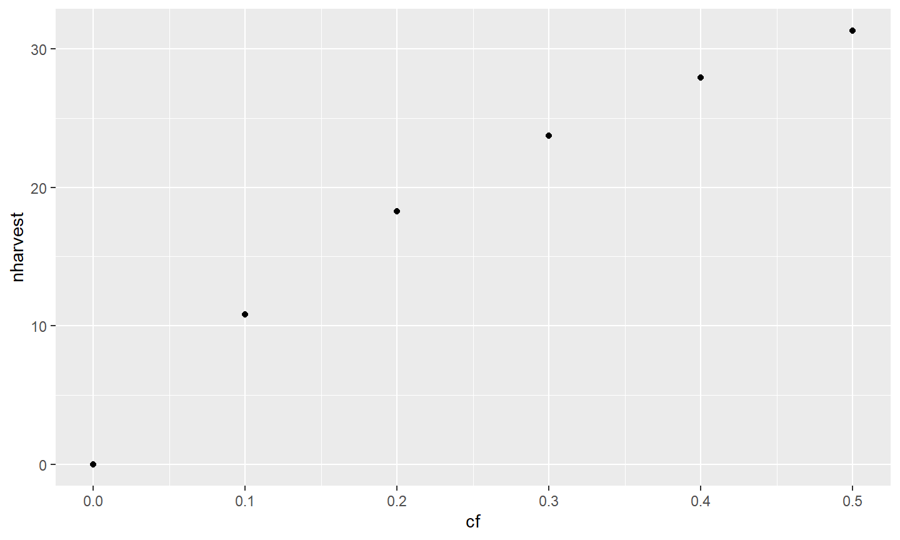
It is also possible to declare data= and aes() within the geom_ rather than in ggplot().

This is generally only desirable, though, if different data are to be used in the different layers. For example, the code below shows nharvest as a line and ndie as points against cf. Note that this is done here only to demonstrate that different data or variables can be used in different layers. This will be useful in some situations but more efficient methods exist in ggplot2 to construct this type of graph.8
ggplot() +
geom_line(data=tmp1,mapping=aes(x=cf,y=nharvest)) +
geom_point(data=tmp1,mapping=aes(x=cf,y=ndie))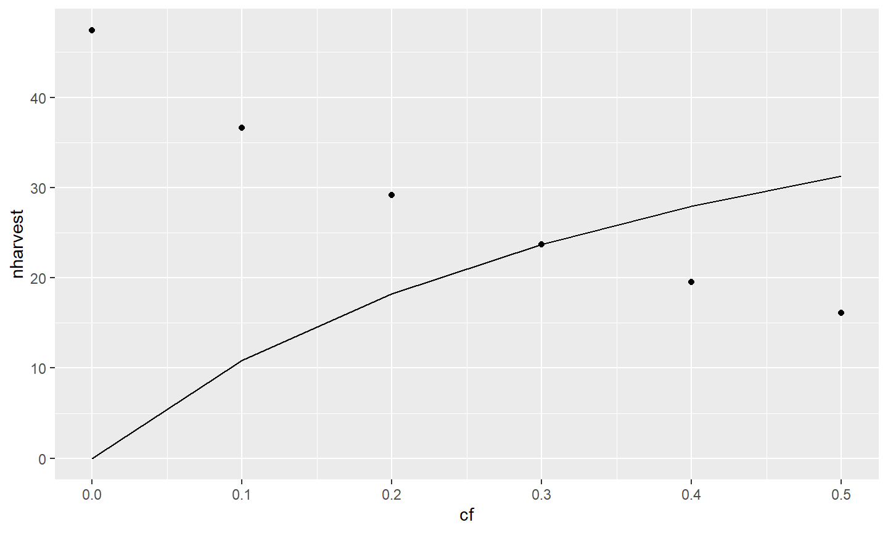
As a general rule, the data= and aes() that will be the same for all layers of a single graph should be declared in ggplot(). Other aesthetics that differ among layers may be declared in the layer’s geom_. For example, the aes() in ggplot() below suggests that all layers will use data=tmp1 and map cf to x, but geom_line() will map nharvest to y and geom_point() will map ndie to y. In other words, the parts that are the same for each layer are in ggplot() whereas those that differ between layers are in the separate geom_s.
ggplot(data=tmp1,mapping=aes(x=cf)) +
geom_line(mapping=aes(y=nharvest)) +
geom_point(mapping=aes(y=ndie))
Let’s return to examining just nharvest against cf. As illustrated above, multiple layers (i.e., geom_s) may be used in one graph. Here the relationship is shown as a line and with points.
ggplot(data=tmp1,mapping=aes(x=cf,y=nharvest)) +
geom_line() +
geom_point()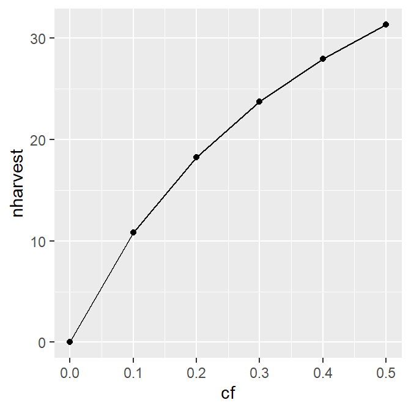
Various characteristics of a layer can be manipulated within the geom_. Here, the width of the line is increased in geom_line() and the size of the points is increased in geom_point().
ggplot(data=tmp1,mapping=aes(x=exploitation,y=nharvest)) +
geom_line(linewidth=1) +
geom_point(size=3)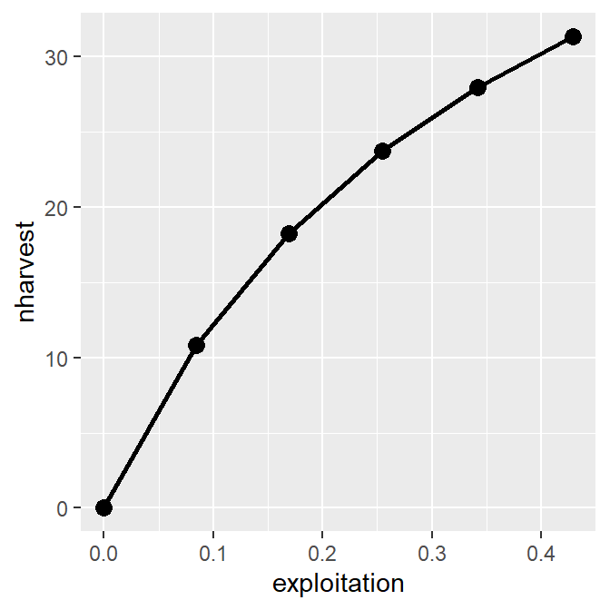
All other aspects of the graph can also be manipulated. For example, characteristics of the x- and y-axes can be controlled with scale_ functions. The scale_ functions will be appended with an x or y depending on which axis is to be manipulated and with other words like continuous, discrete, or datetime depending on the type of data on the axis. Here, both the x- and y-axes have continuous data, so those axes will be manipulated with scale_x_continuous() and scale_y_continuous(), respectively. Below the titles of the axes are modified with a string in name=.9
ggplot(data=tmp1,mapping=aes(x=cf,y=nharvest)) +
geom_line(linewidth=1) +
geom_point(size=3) +
scale_x_continuous(name="Conditional Fishing Mortality (cf)") +
scale_y_continuous(name="Number Harvested (out of 100)")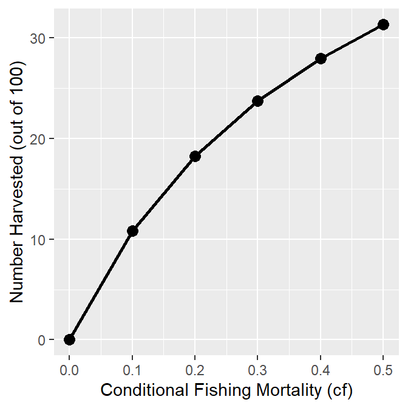
Other aspects of the axes can be manipulated through the scale_ functions,10 with a few common changes illustrated here. Values for where tick-marks are shown can be modified with breaks=. Here the breaks for the x-axis are set with a sequence of numbers from 0 to 0.5 in increments of 0.1 and the y-axis is from 0 to 50 in increments of 5.11 The range or extent of the axis may be set with limits=. Here the y-axis limits are set at a minimum of 0 and a maximum of NA, which means that the maximum will still be defined automatically for the data. Finally, the default for ggplot2 is to provide a buffer to the ends of the axes (i.e., they will extend past their defined limits). This has the unfortunate look of having zero on an axis to not appear as far left or as far down as it should. This behavior can be adjusted with expand= (using expansion()). Below the expansion is removed (i.e., 0) at the lower and set to 2% (i.e., 0.02) at the upper ends of each axis.
ggplot(data=tmp1,mapping=aes(x=cf,y=nharvest)) +
geom_line(linewidth=1) +
geom_point(size=3) +
scale_x_continuous(name="Conditional Fishing Mortality (cf)",
breaks=seq(0,0.5,0.1),expand=expansion(mult=c(0,0.02))) +
scale_y_continuous(name="Number Harvested (out of 100)",
breaks=seq(0,50,5),limits=c(0,NA),
expand=expansion(mult=c(0,0.02)))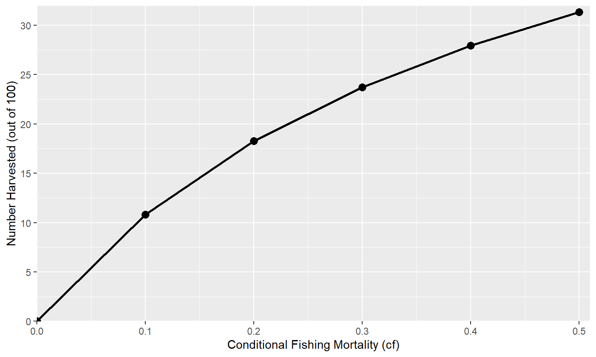
Finally, the default “theme” for the plot can be changed by “adding” a theme_XXX() to the graph. Here, a simple black-and-white theme is added with theme_classic(), which removes the “grayish” background and gridlines inside the plot region and darkens the axis scales and text among other things.12
ggplot(data=tmp1,mapping=aes(x=cf,y=nharvest)) +
geom_line(linewidth=1) +
geom_point(size=3) +
scale_x_continuous(name="Conditional Fishing Mortality (cf)",
breaks=seq(0,0.5,0.1),expand=expansion(mult=c(0,0.02))) +
scale_y_continuous(name="Number Harvested (out of 100)",
breaks=seq(0,50,5),limits=c(0,NA),
expand=expansion(mult=c(0,0.02))) +
theme_classic()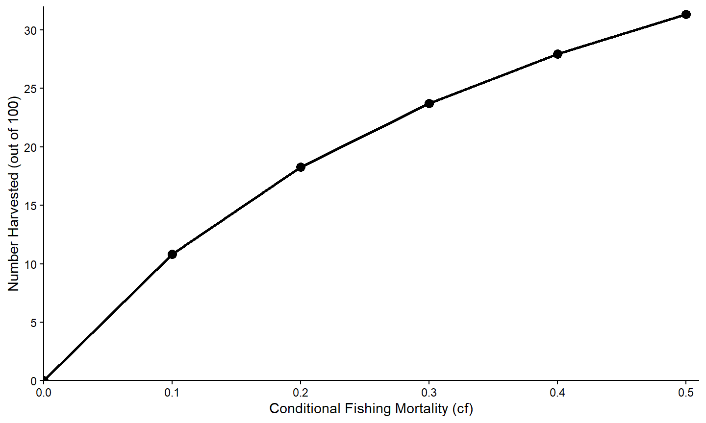
Data Consideration II
All of the variables returned by yprBH_minLL_fixed() are numeric, except for notes.
str(minLL_1)
#> 'data.frame': 30 obs. of 27 variables:
#> $ yield : num 0 17132 21570 21599 20266 ...
#> $ nharvest : num 0 20.1 31.4 38.6 43.6 ...
#> $ ndie : num 62.7 42.6 31.4 24.1 19.1 ...
#> $ nt : num 62.7 62.7 62.7 62.7 62.7 ...
#> $ tr : num 2.09 2.09 2.09 2.09 2.09 ...
#> $ avgwt : num NaN 852 688 560 464 ...
#> $ avglen : num NaN 384 360 338 319 ...
#> $ nAt200 : num 67.5 67.5 67.5 67.5 67.5 ...
#> $ nAt250 : num 58 55.9 53.6 51.1 48.4 ...
#> $ nAt300 : num 48.6 43.1 37.7 32.3 27.1 ...
#> $ nAt350 : num 39.4 31.6 24.8 18.8 13.6 ...
#> $ exploitation: num 0 0.0898 0.18 0.2707 0.3619 ...
#> $ F : num 0 0.105 0.223 0.357 0.511 ...
#> $ M : num 0.223 0.223 0.223 0.223 0.223 ...
#> $ Z : num 0.223 0.329 0.446 0.58 0.734 ...
#> $ S : num 0.8 0.72 0.64 0.56 0.48 0.4 0.7 0.63 0.56 0.49 ...
#> $ cf : num 0 0.1 0.2 0.3 0.4 0.5 0 0.1 0.2 0.3 ...
#> $ cm : num 0.2 0.2 0.2 0.2 0.2 0.2 0.3 0.3 0.3 0.3 ...
#> $ minLL : num 225 225 225 225 225 225 225 225 225 225 ...
#> $ N0 : num 100 100 100 100 100 100 100 100 100 100 ...
#> $ Linf : num 592 592 592 592 592 592 592 592 592 592 ...
#> $ K : num 0.2 0.2 0.2 0.2 0.2 0.2 0.2 0.2 0.2 0.2 ...
#> $ t0 : num -0.3 -0.3 -0.3 -0.3 -0.3 -0.3 -0.3 -0.3 -0.3 -0.3 ...
#> $ LWalpha : num -5.53 -5.53 -5.53 -5.53 -5.53 ...
#> $ LWbeta : num 3.27 3.27 3.27 3.27 3.27 ...
#> $ tmax : num 15 15 15 15 15 15 15 15 15 15 ...
#> $ notes : chr "" "" "" "" ...There are times when we would rather a variable be categorical,13 in the sense that it has labels that represent groups. For example, below we will create a graph that shows the relationship between nharvest and cf with separate lines for each value of cm. As cm is numeric the default colors chosen will appear continuous (i.e., different shades of the same general color) rather than discrete (i.e., distinctly different colors).
A variable can be converted to categorical14 by submitting the original variable to as.factor(). Below this conversion is within mutate() from dplyr so that a new variable is created in the data.frame. In this case, the original cm variable that is numeric still exists and a new fcm variable that is a factor is created in the same data.frame.
Conditional Relationships
Multiple Lines
Lines may be printed for different groups by mapping the color aesthetic to the variable that defines the groups. For example, the “factored” version of the conditional natural mortality variable (i.e., fcm) is mapped to color= in aes() to define colors to be used for separate lines based on the “categories” in cfm.
The separation of colors will carry through to the points if geom_point() is added.
ggplot(data=minLL_1,mapping=aes(x=cf,y=nharvest,color=fcm)) +
geom_line() +
geom_point()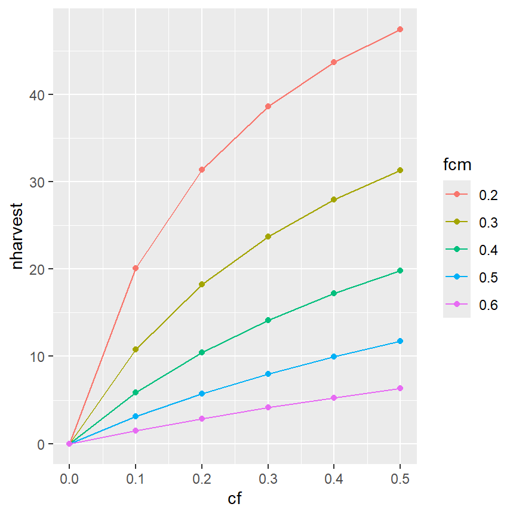
It is also possible to have colors for just the lines (and not the points) by moving the color aesthetic into geom_line() (and not having a color aesthetic in geom_point() or in ggplot(). Recall that mappings declared in gggplot() will be used for all ensuing geom_s, whereas those declared in a geom_ will only be used for that geom_.
ggplot(data=minLL_1,mapping=aes(x=cf,y=nharvest)) +
geom_line(mapping=aes(color=fcm)) +
geom_point()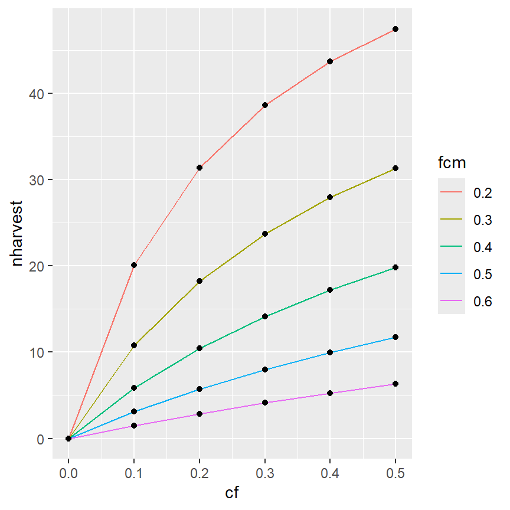
Of course, the other modifications made above can also be made here.15
ggplot(data=minLL_1,mapping=aes(x=cf,y=nharvest,color=fcm)) +
geom_line(linewidth=1) +
scale_x_continuous(name="Conditional Fishing Mortality (cf)",
breaks=seq(0,0.5,0.1),expand=expansion(mult=c(0,0.02))) +
scale_y_continuous(name="Number Harvested (out of 100)",
breaks=seq(0,50,5),limits=c(0,NA),
expand=expansion(mult=c(0,0.02))) +
theme_classic()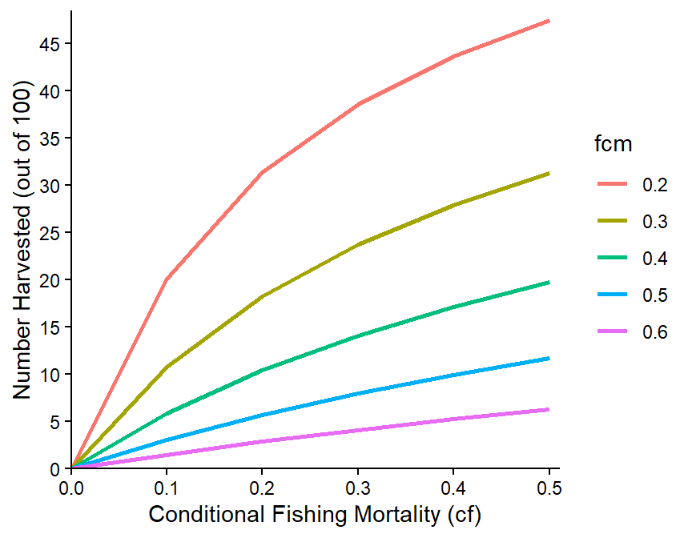
The colors used can be changed with one of the scale_color_ functions.16 Here, for example, the line colors will follow a grey scale.
ggplot(data=minLL_1,mapping=aes(x=cf,y=nharvest,color=fcm)) +
geom_line(linewidth=1) +
scale_x_continuous(name="Conditional Fishing Mortality (cf)",
breaks=seq(0,0.5,0.1),expand=expansion(mult=c(0,0.02))) +
scale_y_continuous(name="Number Harvested (out of 100)",
breaks=seq(0,50,5),limits=c(0,NA),
expand=expansion(mult=c(0,0.02))) +
scale_color_grey() +
theme_classic()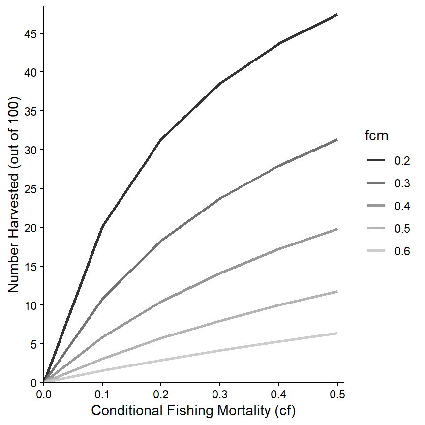
The “name” printed at the top of the legend can be modified with name= in the scale_color_ function. It can be removed completely by using name=NULL as shown below. In addition, the labels for the groups can be changed using labels= in the scale_color_ function. For example, here I append “cm=” to each cm value.
ggplot(data=minLL_1,mapping=aes(x=cf,y=nharvest,color=fcm)) +
geom_line(linewidth=1) +
scale_x_continuous(name="Conditional Fishing Mortality (cf)",
breaks=seq(0,0.5,0.1),expand=expansion(mult=c(0,0.02))) +
scale_y_continuous(name="Number Harvested (out of 100)",
breaks=seq(0,50,5),limits=c(0,NA),
expand=expansion(mult=c(0,0.02))) +
scale_color_grey(name=NULL,labels=paste0("cm=",levels(minLL_1$fcm))) +
theme_classic()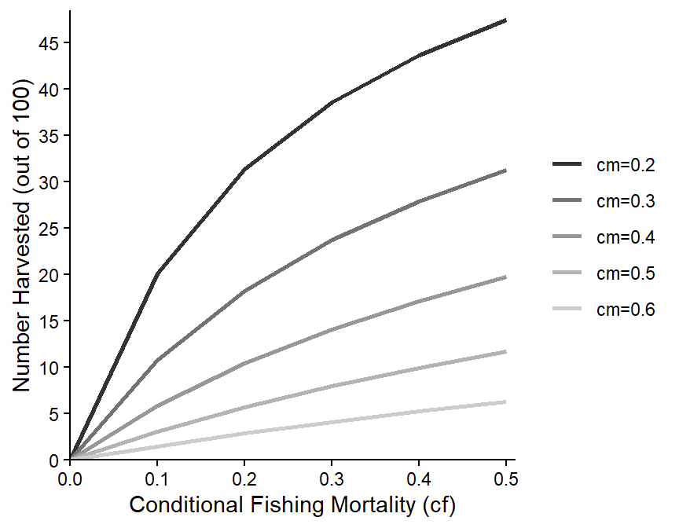
Finally, various characteristics of the legend can be controlled within theme().17 Here, the legend is moved to the top-left corner of the plot region.18
ggplot(data=minLL_1,mapping=aes(x=cf,y=nharvest,color=fcm)) +
geom_line(linewidth=1) +
scale_x_continuous(name="Conditional Fishing Mortality (cf)",
breaks=seq(0,0.5,0.1),expand=expansion(mult=c(0,0.02))) +
scale_y_continuous(name="Number Harvested (out of 100)",
breaks=seq(0,50,5),limits=c(0,NA),
expand=expansion(mult=c(0,0.02))) +
scale_color_grey(name=NULL,labels=paste0("cm=",levels(minLL_1$fcm))) +
theme_classic() +
theme(legend.position=c(0.15,0.77))
For completeness, separate lines can also be made using a continuous variable. In these instances though the name of the continuous variables must also be used with group= in aes(). For example, a graph where the color of the lines come from a continous scale based on the value of cm is created below.
ggplot(data=minLL_1,mapping=aes(x=cf,y=nharvest,color=cm,group=cm)) +
geom_line(linewidth=1) +
scale_x_continuous(name="Conditional Fishing Mortality (cf)",
breaks=seq(0,0.5,0.1),expand=expansion(mult=c(0,0.02))) +
scale_y_continuous(name="Number Harvested (out of 100)",
breaks=seq(0,50,5),limits=c(0,NA),
expand=expansion(mult=c(0,0.02))) +
theme_classic() +
theme(legend.position=c(0.15,0.77))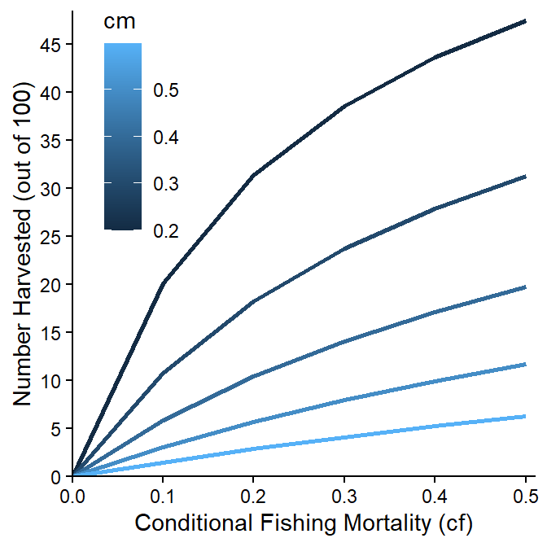
The colors used can also be adjusted with a scale_color_ function, though the set of functions that can be used with a continuous variable is different than those that can be used with a categorical variable.19
Facets
An alternative is examinine the relationship between two variables separated by groups by making separate plots for each group. In ggplot2 this is called facetting and is accomplished by adding facet_wrap() with the name of the grouping variable within vars().20
ggplot(data=minLL_1,mapping=aes(x=cf,y=nharvest)) +
geom_line(linewidth=1) +
scale_x_continuous(name="Conditional Fishing Mortality (cf)",
breaks=seq(0,0.5,0.1),expand=expansion(mult=c(0,0.02))) +
scale_y_continuous(name="Number Harvested (out of 100)",
breaks=seq(0,50,5),limits=c(0,NA),
expand=expansion(mult=c(0,0.02))) +
theme_bw() +
facet_wrap(vars(fcm))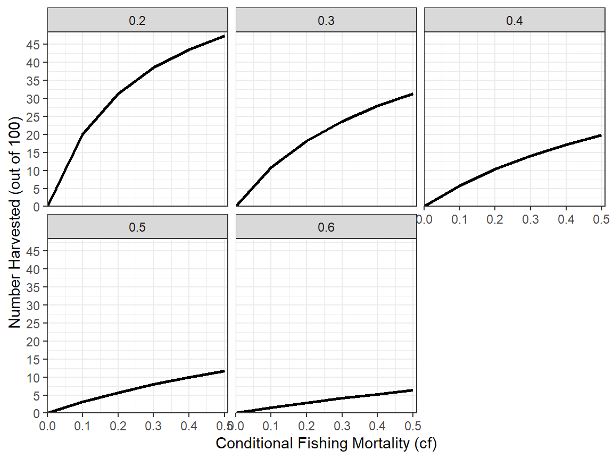
Many aspects of the facets can be controlled,21 but are not illustrated here as we do not use much faceting in the rFams documentation.
Data Consideration III
A separate issue arises if we want to examine the relationship of more than one variable against a single other variable. Suppose, for example, that we want to examine the number of fish that survived to several specific lengths at various levels of conditional fishing mortality. Doing this requires the variables shown below.22
tmp2 <- minLL_1 |>
select(cf,cm,starts_with("nAt"))
head(tmp2)
#> cf cm nAt200 nAt250 nAt300 nAt350
#> 1 0.0 0.2 67.50249 57.96988 48.59772 39.41029
#> 2 0.1 0.2 67.50249 55.85488 43.08372 31.64732
#> 3 0.2 0.2 67.50249 53.58174 37.65684 24.76460
#> 4 0.3 0.2 67.50249 51.11635 32.32635 18.75362
#> 5 0.4 0.2 67.50249 48.41099 27.10403 13.60485
#> 6 0.5 0.2 67.50249 45.39545 22.00526 9.30741To address the question would require plotting nAt200 against cf, nAt250 against cf, etc. As demonstrated in the Simple Relationships section, this can be accomplished with multiple geom_line()s each with its own aes(). However, this is cumbersome and, more importantly, does not generalize well. This issue can be better handled with some data wrangling prior to making the plot.
These data are in wide23 format where each row of the data.frame contains multiple observations to be plotted. For example, one instance of nAt200 against cf and one instance of nAt250 against cf are in the same row.24 Before plotting, wide format data needs to be transformed to long25 format data where each row contains only one observation to be plotted.26
Wide format data can be transformed or “pivoted” to long format data with pivot_longer() from tidyr. The first arguments to pivot_longer are names of the variables that need to be converted from the multiple columns in wide format to multiple rows in long format. In this case, the nAtXXX variables need to be moved from columns in the original wide format data.frame to multiple rows (and one column, with a corresponding “label” column) in the new long format data.frame. The variables can be chosen in a variety of ways – e.g., by listing them individually, by excluding those variables not to use with an ! (e.g., !cf), or using one of the helper functions supplied with tidyr. As all of these variables begin with nAt, starts_with() is used below to select them.27 A name for the variable that will contain the values from these columns in the new long format data.frame is given to values_to=. A name for the variable that will contain “labels” for what these values represent is given to names_to=.28
tmp2long <- tmp2 |>
tidyr::pivot_longer(tidyr::starts_with("nAt"),
values_to="n",
names_to="Length") |>
as.data.frame()
head(tmp2long)
#> cf cm Length n
#> 1 0.0 0.2 nAt200 67.50249
#> 2 0.0 0.2 nAt250 57.96988
#> 3 0.0 0.2 nAt300 48.59772
#> 4 0.0 0.2 nAt350 39.41029
#> 5 0.1 0.2 nAt200 67.50249
#> 6 0.1 0.2 nAt250 55.85488In this long format data.frame each row now corresponds to one observation – i.e., one n-cf pair with a corresponding label describing the length that the observation corresponds to.
The Length variable in this case has awkward names; they would look better with the nAt dropped to leave just the length value (though it will be a character). This common prefix can be dropped by using names_prefix= with the common prefix in the original pivot_longer() call.
tmp2long <- tmp2 |>
tidyr::pivot_longer(tidyr::starts_with("nAt"),
values_to="n",
names_to="Length",names_prefix="nAt") |>
as.data.frame()
head(tmp2long)
#> cf cm Length n
#> 1 0.0 0.2 200 67.50249
#> 2 0.0 0.2 250 57.96988
#> 3 0.0 0.2 300 48.59772
#> 4 0.0 0.2 350 39.41029
#> 5 0.1 0.2 200 67.50249
#> 6 0.1 0.2 250 55.85488Separate Relationships
Once the data are in long format, the process to examine the relationships of multiple variables against a single other variable is basically the same process as that described for Conditional Relationships. Here we first examine the numbers of fish surviving to the four lengths against cf only for when cm is 0.30.
ggplot(data=tmp3,mapping=aes(x=cf,y=n,color=Length)) +
geom_line(linewidth=1) +
scale_x_continuous(name="Conditional Fishing Mortality (cf)",
breaks=seq(0,0.5,0.1),expand=expansion(mult=c(0,0.02))) +
scale_y_continuous(name="Number Surviving (out of 100)",
breaks=seq(0,50,5),limits=c(0,NA),
expand=expansion(mult=c(0,0.02))) +
theme_classic()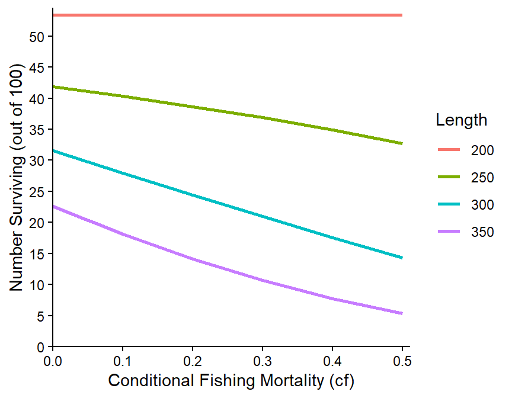
The same relationship can also be examined for the separate values of cm via faceting.
ggplot(data=tmp2long,mapping=aes(x=cf,y=n,color=Length)) +
geom_line(linewidth=1) +
scale_x_continuous(name="Conditional Fishing Mortality (cf)",
breaks=seq(0,0.5,0.1),expand=expansion(mult=c(0,0.02))) +
scale_y_continuous(name="Number Surviving (out of 100)",
breaks=seq(0,70,10),limits=c(0,NA),
expand=expansion(mult=c(0,0.02))) +
theme_bw() +
facet_wrap(vars(cm))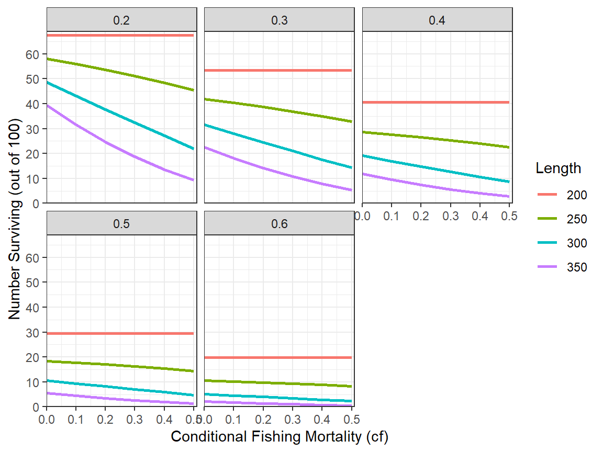
More Complex Relationships
The wealth of results returned by rFAMS allows for exploration of more complex relationships. However, these relationships become harder to visualize.
As an example for a more complex relationship to explore, suppose that interest is in the relationship between number of fish that survived to 350 mm (for example) as a function of both cf and cm. For this situation, a new data.frame that is restricted to the data that corresponds to just the numbers at 350 mm is first created from the long data.frame created above.29
tmp4 <- tmp2long |>
dplyr::filter(Length=="350")A contour plot that connects with a line the same values for one variable at each point of the other two variables is one way to examine a three-dimensional relationship. Contour plots can be made with geom_contour() and geom_contour_filled() from ggplot2. However, we have found that geom_contour2() and geom_contour_fill() from metR to be more useful as they allow the contour lines to be more easily labeled. All of these functions require mapping the variable that will define the contour lines to z= in aes(). For example, a basic plot with contour lines defined by the number of fish surviving to 350 mm (i.e., n) relative to values of cf and cm is shown below.30
ggplot(data=tmp4,mapping=aes(x=cf,y=cm,z=n)) +
metR::geom_contour2()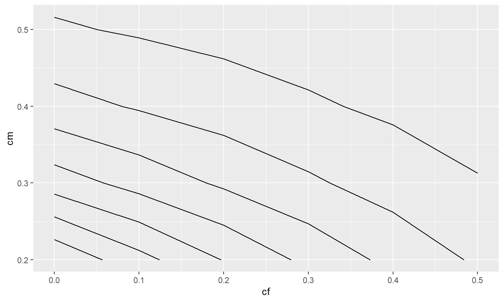
Labeling these contours requires setting label= in aes() in geom_contour2() to after_stat(level) where level is calculated behind-the-scenes by geom_contour2() to be values connected by the contour lines.31
ggplot(data=tmp4,mapping=aes(x=cf,y=cm,z=n)) +
metR::geom_contour2(mapping=aes(label=after_stat(level)))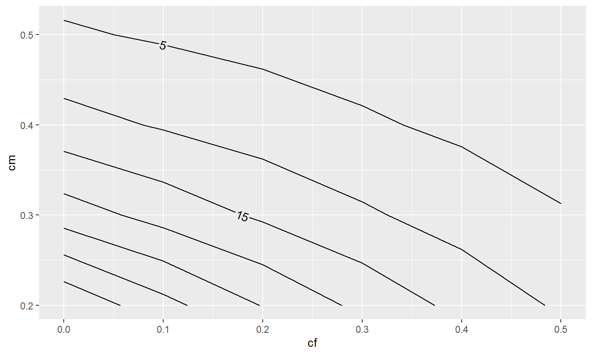
In this example, it would better to have more of the contours labelled. The combined use of skip=0 (which indicates that no contours should be skipped when placing the labels) and label.placer=label_placer_n(n=1) (which finds the flattest place to put one label on the contour) helps to label all or most of the contours.
ggplot(data=tmp4,mapping=aes(x=cf,y=cm,z=n)) +
metR::geom_contour2(mapping=aes(label=after_stat(level)),
label.placer=label_placer_n(n=1),skip=0)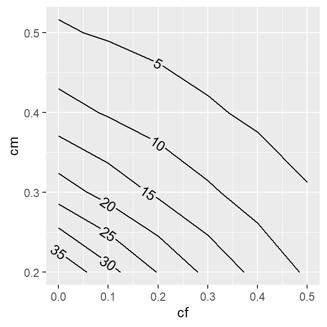
Of course, the usual modifications can be made to make the graph more visually appealing.
ggplot(data=tmp4,mapping=aes(x=cf,y=cm,z=n)) +
metR::geom_contour2(mapping=aes(label=after_stat(level)),
label.placer=label_placer_n(n=1),skip=0) +
scale_x_continuous(name="Conditional Fishing Mortality (cf)",
breaks=seq(0,0.5,0.1),expand=expansion(mult=c(0,0.02))) +
scale_y_continuous(name="Conditional Natural Mortality (cm)",
breaks=seq(0,0.5,0.1),expand=expansion(mult=c(0,0.02))) +
theme_classic()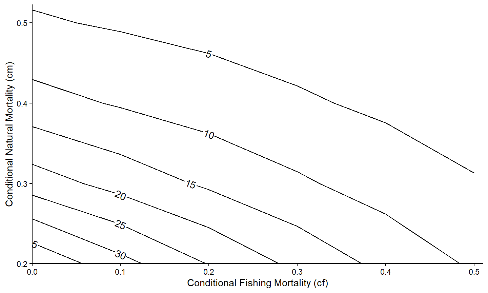
The patterns may be more evident if the contours are “filled” with a gradient of colors with geom_contour_fill() from metR. Note that geom_contour_fill() was placed before geom_contour2() so that the contour lines would be placed on top of the fill colors.
ggplot(data=tmp4,mapping=aes(x=cf,y=cm,z=n)) +
metR::geom_contour_fill() +
metR::geom_contour2(mapping=aes(label=after_stat(level)),
label.placer=label_placer_n(n=1),
skip=0) +
scale_x_continuous(name="Conditional Fishing Mortality (cf)",
breaks=seq(0,0.5,0.1),expand=expansion(mult=c(0,0.02))) +
scale_y_continuous(name="Conditional Natural Mortality (cm)",
breaks=seq(0,0.5,0.1),expand=expansion(mult=c(0,0.02))) +
theme_classic()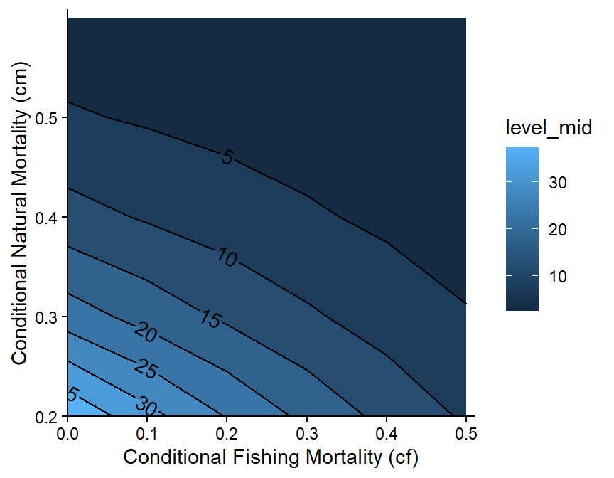
However, the default blue color scheme is a bit overwhelming. A different color palette can be used by adding scale_color_continuous() with palette=. The example below demonstrates an “orange-red” pallete.32 Note that the legend (related to the fill colors) was removed with theme(legend.position="none") because it is redundant with the contour labels.
ggplot(data=tmp4,mapping=aes(x=cf,y=cm,z=n)) +
metR::geom_contour_fill() +
metR::geom_contour2(mapping=aes(label=after_stat(level)),
label.placer=label_placer_n(n=1),
skip=0) +
scale_x_continuous(name="Conditional Fishing Mortality (cf)",
breaks=seq(0,0.5,0.1),expand=expansion(mult=c(0,0.02))) +
scale_y_continuous(name="Conditional Natural Mortality (cm)",
breaks=seq(0,0.5,0.1),expand=expansion(mult=c(0,0.02))) +
scale_fill_continuous(palette="OrRd") +
theme_classic() +
theme(legend.position="none")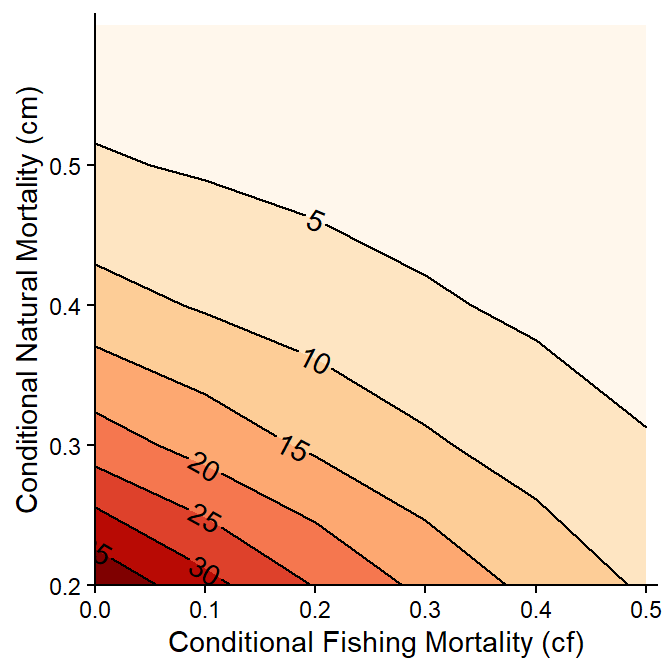
It is also possible to use faceting to examine this relationship for the numbers of fish that survived to the other lengths. Make special note of the return to using the tmp2long data.frame here.
ggplot(data=tmp2long,mapping=aes(x=cf,y=cm,z=n)) +
metR::geom_contour_fill() +
metR::geom_contour2(mapping=aes(label=after_stat(level)),
label.placer=label_placer_n(n=1),
skip=0) +
scale_x_continuous(name="Conditional Fishing Mortality (cf)",
breaks=seq(0,0.5,0.1),expand=expansion(mult=c(0,0.02))) +
scale_y_continuous(name="Conditional Natural Mortality (cm)",
breaks=seq(0,0.5,0.1),expand=expansion(mult=c(0,0.02))) +
scale_fill_continuous(palette="OrRd") +
theme_bw() +
theme(legend.position="none") +
facet_wrap(vars(Length))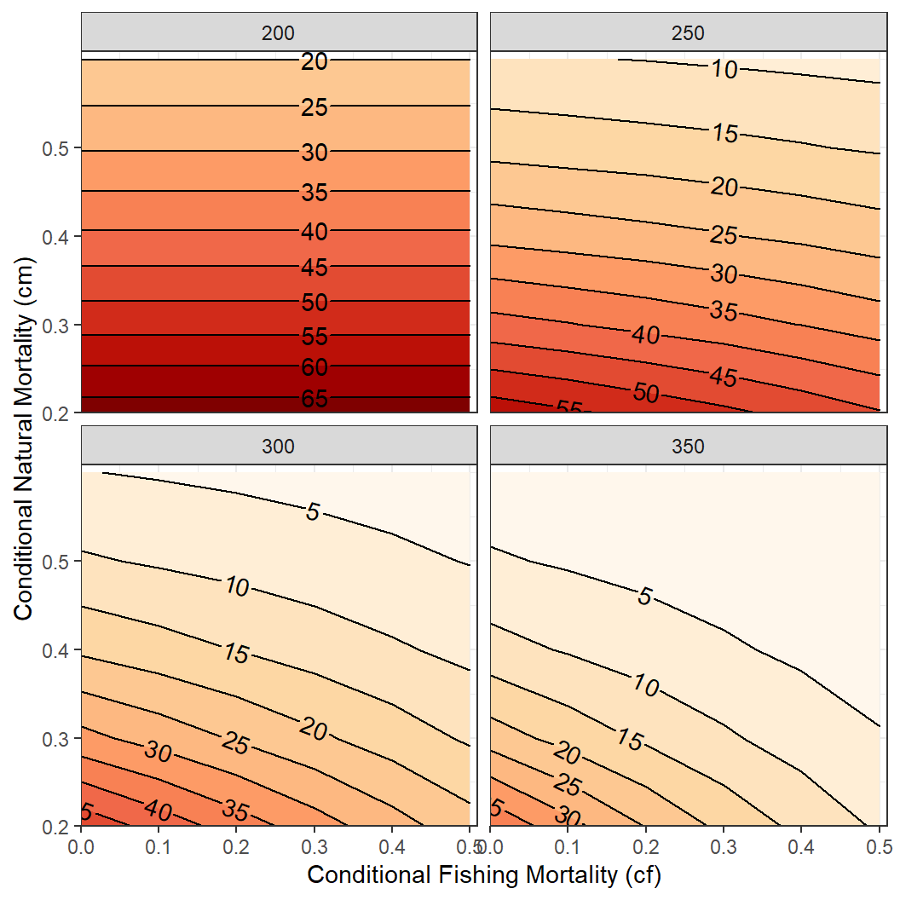
Miscellaneous Things
Titles
While not appropriate for publications, there may be a reason to include titles on your ggplot2 graph. For example a main title, a subtitle, and a caption (defaults to lower-right) is included below with title=, subtitle= and caption= in labs().33 Aspects (size, color, etc.) for these items can be modified with theme().
ggplot(data=tmp1,mapping=aes(x=cf,y=nharvest)) +
geom_line(linewidth=1) +
geom_point(size=3) +
scale_x_continuous(name="Conditional Fishing Mortality (cf)",
breaks=seq(0,0.5,0.1),expand=expansion(mult=c(0,0.02))) +
scale_y_continuous(name="Number Harvested (out of 100)",
breaks=seq(0,50,5),limits=c(0,NA),
expand=expansion(mult=c(0,0.02))) +
theme_classic() +
labs(title="Harvest Relasionship to Fishing Mortality",
subtitle="Minimum length limit of 225 mm & cm=0.30",
caption="Results from rFAMS")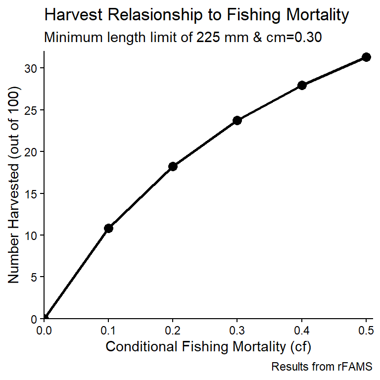
Custom Themes
Themes allow you to control many of the non-data related aspects of your graphs. Some complete themes are built-in to ggplot2. For example, the theme_classic() and theme_bw() that were used in the previous examples. These themes can be modified with arguments to theme(). For example, theme(legend.position="none") was used previously to remove the legend from the graph.
Many aspects of a graph can be controlled through theme().34 For example, the simple plot of nharvest versus cf from the Simple Relationships section is modified below by adding the theme_bw() theme but then modifying that to
- changing the color of the plot panel border to black,
- removing the major and minor grid lines in the plot panel,
- increasing the size and changing the color to black of the axis title and text, and
- changing the axis lines to black.
ggplot(data=tmp1,mapping=aes(x=cf,y=nharvest)) +
geom_line(linewidth=1) +
geom_point(size=3) +
scale_x_continuous(name="Conditional Fishing Mortality (cf)",
breaks=seq(0,0.5,0.1),expand=expansion(mult=c(0,0.02))) +
scale_y_continuous(name="Number Harvested (out of 100)",
breaks=seq(0,50,5),limits=c(0,NA),
expand=expansion(mult=c(0,0.02))) +
theme_bw() +
theme(
panel.border=element_rect(color="black"),
panel.grid.major=element_blank(),
panel.grid.minor=element_blank(),
axis.text=element_text(size=12,color="black"),
axis.title=element_text(size=14,color="black"),
axis.line=element_line(color="black"),
)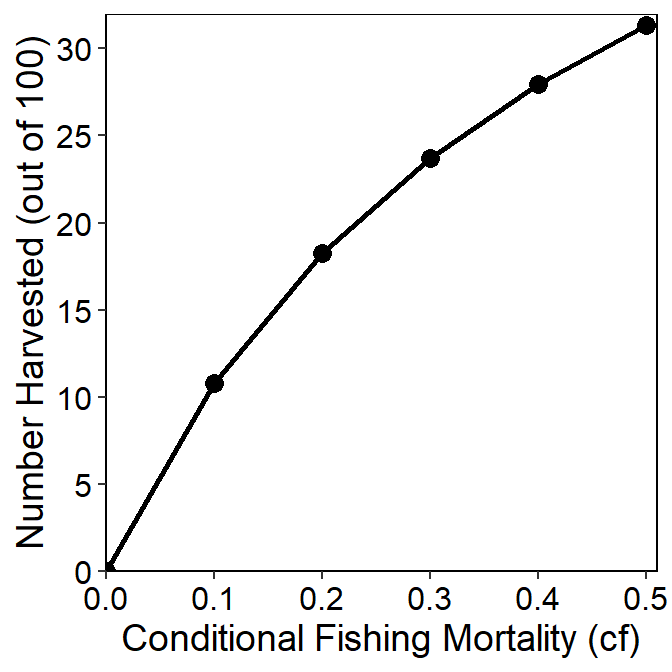
Even this simple examples shows how the code to produce a graph can become quite long if many elements are changed in theme(). In addition, you will likely want to use the same modifications in all of your plots, which could entail a lot of cut-and-paste. Fortunately, your theming decisions can be saved to a custom thee function and then applied in one line to all of your graphs. As an example, the code below creates a custom theme called theme_rFAMS_ex() that encapsulates the modifications above.
theme_rFAMS_ex <- function() {
theme_bw() +
theme(
panel.border=element_rect(color="black"),
panel.grid.major=element_blank(),
panel.grid.minor=element_blank(),
axis.text=element_text(size=12,color="black"),
axis.title=element_text(size=14,color="black"),
axis.line=element_line(color="black"),
)
}Once this code is run then it can be applied to any graph.
ggplot(data=tmp1,mapping=aes(x=cf,y=nharvest)) +
geom_line(linewidth=1) +
geom_point(size=3) +
scale_x_continuous(name="Conditional Fishing Mortality (cf)",
breaks=seq(0,0.5,0.1),expand=expansion(mult=c(0,0.02))) +
scale_y_continuous(name="Number Harvested (out of 100)",
breaks=seq(0,50,5),limits=c(0,NA),
expand=expansion(mult=c(0,0.02))) +
theme_rFAMS_ex()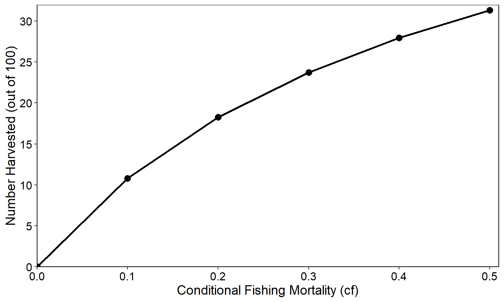
ggplot(data=tmp2long,mapping=aes(x=cf,y=n,color=Length)) +
geom_line(linewidth=1) +
scale_x_continuous(name="Conditional Fishing Mortality (cf)",
breaks=seq(0,0.5,0.1),expand=expansion(mult=c(0,0.02))) +
scale_y_continuous(name="Number Surviving (out of 100)",
breaks=seq(0,70,10),limits=c(0,NA),
expand=expansion(mult=c(0,0.02))) +
theme_rFAMS_ex() +
facet_wrap(vars(cm))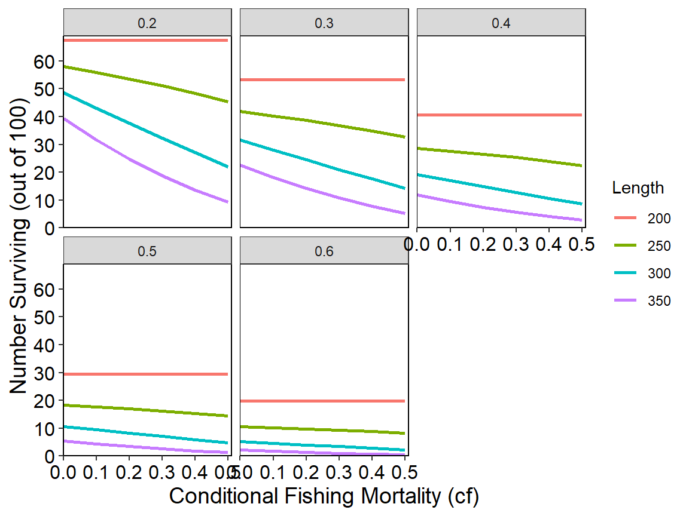
Additional elements for a specific graph can still be changed with theme().
ggplot(data=tmp2long,mapping=aes(x=cf,y=n,color=Length)) +
geom_line(linewidth=1) +
scale_x_continuous(name="Conditional Fishing Mortality (cf)",
breaks=seq(0,0.5,0.1),expand=expansion(mult=c(0,0.02))) +
scale_y_continuous(name="Number Surviving (out of 100)",
breaks=seq(0,70,10),limits=c(0,NA),
expand=expansion(mult=c(0,0.02))) +
theme_rFAMS_ex() +
theme(legend.position=c(0.85,0.2)) +
facet_wrap(vars(cm))
This fishR post demonstrates how to build and use a custom theme for creating graphs that meet AFS publication requirements.
Returned Lists of data.frames
The dynamic pool model implemented in dpmBH_minLL_fixed() returns an object that is a list of two data.frames, which is more complex than what is returned from other functions in rFAMS. However, accessing these two data.frames is fairly simple and is illustrated here.
The code below is copied from this this article that demonstrates how to use dpmBH_minLL_fixed().35 The results were assigned to minLL_2 in the last line.
# set number of simulation years
simyears <- 50
# set minimum length limit value
minLL <- 400
# create life history parameter object
LH <- makeLH(N0=100,tmax=15,Linf=1349.5,K=0.111,t0=0.065,LWalpha=-5.2147,LWbeta=3.153)
# set mortality matrices
cm <- matrix(rep(c(rep(0,1), rep(0.18,(LH$tmax))), simyears),nrow=simyears,byrow=TRUE)
cf <- matrix(rep(c(rep(0,1), rep(0.33,(LH$tmax))), simyears),nrow=simyears,byrow=TRUE)
# create a recruitment vector
rec <- genRecruits(method="fixed",nR=1000,simyears=simyears)
# run the DPM model of a 400 mm minimum length limit for 40 years
# assume this is for landlocked Striped Bass
minLL_2 <- dpmBH_minLL_fixed(simyears=simyears,minLL=minLL,
cf=cf,cm=cm,rec=rec,lhparms=LH,matchRicker=FALSE,
species="Striped Bass",group="landlocked")The results in minLL_2 consist of two data.frames – sumbyAge and sumbyYear – which are simulation summarized arranged by age and by year.
names(minLL_2)
#> [1] "sumbyAge" "sumbyYear"These data.frames can be accessed by appending a $ followed by the data.frame name to minLL_2. For example, the first six rows of the sumbyAge data.frame are shown below.
head(minLL_2$sumbyAge)
#> year yc age length weight nstart exploitation expect_nat_death cf
#> 1 1 1 0 0.0000 0.00000 1000.0000 0.0000000 0.0000000 0.00
#> 2 2 1 1 133.0349 30.35037 1000.0000 0.0000000 0.1800000 0.33
#> 3 3 1 2 260.8383 253.58225 820.0000 0.0000000 0.1800000 0.33
#> 4 4 1 3 375.2145 798.00101 672.4000 0.3012967 0.1493033 0.33
#> 5 5 1 4 477.5741 1707.32249 405.4091 0.3012967 0.1493033 0.33
#> 6 6 1 5 569.1797 2968.94019 222.7318 0.3012967 0.1493033 0.33
#> cm F M Z S biomass nharvest ndie
#> 1 0.00 0.0000000 0.0000000 0.0000000 1.0000 0.00 0.00000 0.00000
#> 2 0.18 0.0000000 0.1984509 0.1984509 0.8200 30350.37 0.00000 180.00000
#> 3 0.18 0.0000000 0.1984509 0.1984509 0.8200 207937.44 0.00000 147.60000
#> 4 0.18 0.4004776 0.1984509 0.5989285 0.5494 536575.88 158.28150 108.70941
#> 5 0.18 0.4004776 0.1984509 0.5989285 0.5494 692164.07 122.14843 60.52891
#> 6 0.18 0.4004776 0.1984509 0.5989285 0.5494 661277.27 67.10835 33.25458
#> yield minLL N0 Linf K t0 LWalpha LWbeta tmax notes
#> 1 0.0 400 1000 1349.5 0.111 0.065 -5.2147 3.153 15
#> 2 0.0 400 1000 1349.5 0.111 0.065 -5.2147 3.153 15
#> 3 0.0 400 1000 1349.5 0.111 0.065 -5.2147 3.153 15
#> 4 205139.2 400 1000 1349.5 0.111 0.065 -5.2147 3.153 15
#> 5 274569.3 400 1000 1349.5 0.111 0.065 -5.2147 3.153 15
#> 6 245109.6 400 1000 1349.5 0.111 0.065 -5.2147 3.153 15Accessing this data.frame in this way means that it can be used just like any other data.frame. For example, the first year-class in this data.frame is isolated below and a graph of the number harvested by age is created.
tmpX <- minLL_2$sumbyAge |>
dplyr::filter(yc==1)
ggplot(data=tmpX,mapping=aes(x=age,y=nharvest)) +
geom_line(linewidth=1) +
geom_point(size=2) +
scale_x_continuous(name="Age") +
scale_y_continuous(name="Number Harvested",
expand=expansion(mult=c(0,0.02))) +
theme_classic()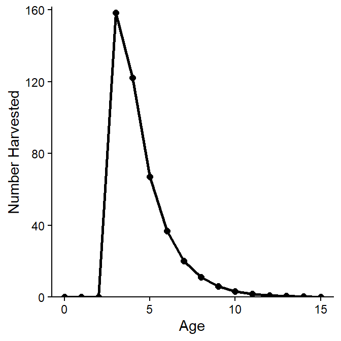
Other Types of Graphs
All of the examples above used either geom_line() or geom_point() to visualize the relationship between two variables. While it is not possible to show all possible graphs that can be constructed with ggplot2, there are many types of graphics that can be made and may be appropriate in these or other situations.36
For example, the number harvested at each age shown in the previous section is probably better viewed as a bar chart. A bar chart is constructed using geom_bar(). However, the default behavior of geom_bar() is to count the number of items of y= for x= and then plot those counts as the height of the bar. In this example, the “counts” or height of the bar is already summarized in the variable provided to y= (i.e., nharvest). Use stat="identity" in geom_bar() to over-ride the default counting and simply use the values in y= for the bar heights. The example below also outlines the bars in black (with color=) and fills them with a light gray (with fill=).
ggplot(data=tmpX,mapping=aes(x=age,y=nharvest)) +
geom_bar(stat="identity",color="black",fill="lightgray") +
scale_x_continuous(name="Age",
expand=expansion(mult=c(0,0.02))) +
scale_y_continuous(name="Number Harvested",
expand=expansion(mult=c(0,0.02))) +
theme_classic()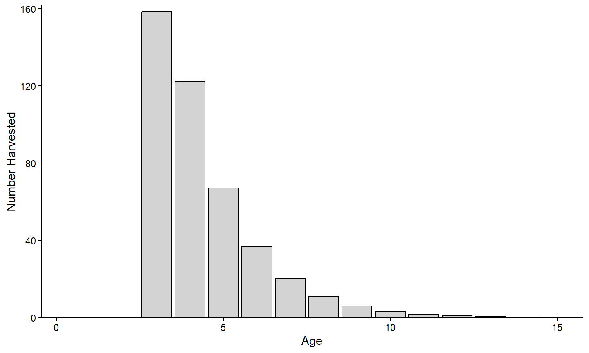